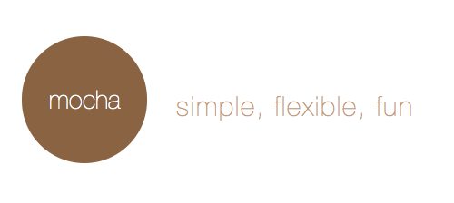

(Modern) JavaScript Testing
Jake Luer
- tw: @jakeluer
- gh: @logicalparadox
Audience Poll
(modern) javascript stack
client-side
- advanced data modelling and state syncronization
- modular and reusable client-side template rendering
- HTML5 transports and storage
server-side
- node.js - streams, sockets, services
- schema-less json databases
context-based deployments
hyper-connected
application that requires realtime or psuedo-realtime connection to backend services
- social applications / chat
- analytical dashboards
- multiplayer games
tempermentally-connected
application that cannot rely on a consistent connection to backend services
- mobile websites
- mobile applications (phonegap, titanium, etc)
- chrome packaged apps
testing challenges
environment challenges
- not all javascript is created equally (v8, spidermonkey, etc..)
- consumer javascript usage is most fractured of an language language deployment
- you can't please everybody
application challenges
- mvc means complexity, complexity means more tests
- more targets means more hacks to get it running "everwhere"
- you can't please everybody
elements of a full testing stack
- isomorphic test runner / reporter
- expressive, thin and extandable assertion library
- multi-environment test automation; continous integration
mocha - test framework

- tdd / bdd style test definitions
- simple asyncronous testing
- flexible / extendable reporting
- isomorphic - node.js, browsers
visionmedia.github.io/mocha
mocha example
chai - assertion library

- three assertion styles
- extendable with plugins
- isomorphic - node.js, browsers
chaijs.com
chai example
chai plugins
plugins provide new assertions, vendor integrations, and test patterns
- sinon-chai, chai-spies
- chai-jquery, chai-backbone
- chai-json-schema
karma - test automation / ci
karma works with already existing testing stacks to provide test automation in a majority of browsers
- run tests automatically in chrome, firefox, ie, etc
- .. or headless in phantomjs
- .. or in ci using saucelabs
karma-runner.github.io
end
/
#